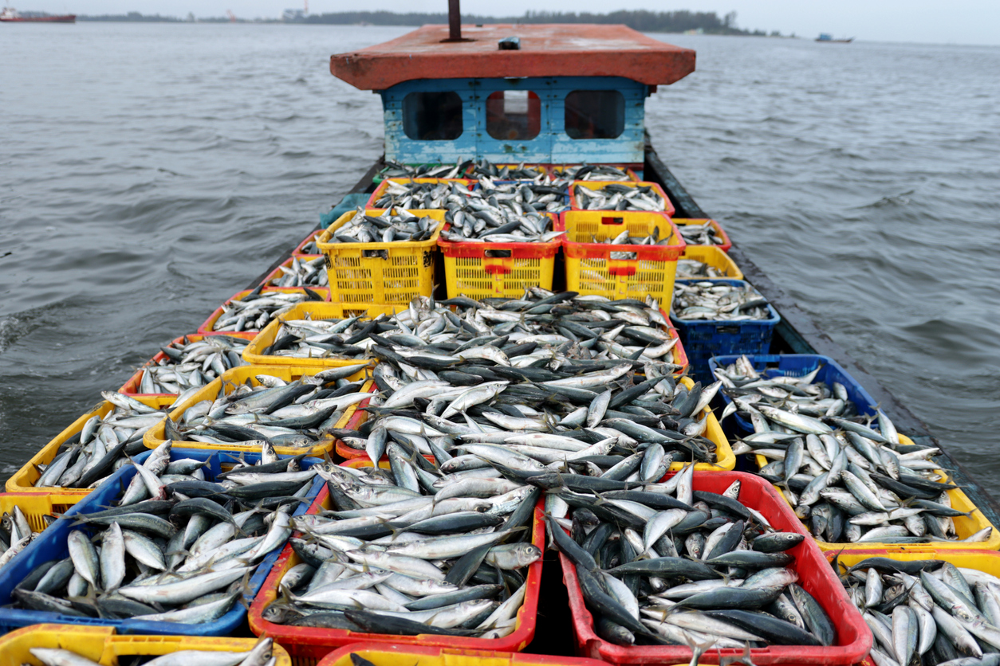

\(u'(\cdot)>0\), and \(u''(\cdot)<0\).
\(G'(s)>0\) : Growth Function
\(s=(1+w) b_t(1- f_t)\) : Post-shock escapement
\(I(w)\) : Insurance payout function
\(\rho\) : Insurance premium
Dynamic input choices for renewable resources with index insurance
Costello Lab Meeting
Nathaniel Grimes
Bren School of Environmental Science & Management
Last updated: Feb 05, 2026
Food systems rely on renewable resources
Yet, are vulnerable to environmental stochasticity
Shocks persist in dynamic resources


Marine heatwave in 2022 collapsed Bering Sea Crab
Restricted openings in 2024 and 2025
Systems most vulnerable after shocks
Index Insurance is a potential tool to mitigate shocks
Providing insurance could help reduce pressure when systems are most vulnerable
Index Insurance incentivizes behavior change
Overstock Pastures
Chemical Use \(\lessgtr0\)
Change Effort \(\lessgtr0\)

Direction driven by risk effects of inputs
Risk increasing inputs
\[ \frac{\partial Var(h)}{\partial x} > 0 \]
Insurance always increases use of risk increasing inputs
Inputs add risk, insurance protects against added risk
Risk decreasing inputs
\[ \frac{\partial Var(h)}{\partial x} < 0 \]
Insurance always decreases use of risk decreasing inputs
Inputs lower risk, insurance substitutes risk, making investment less necessary
Few studies consider dynamic optimal behavior
Ranchers increase stock size, reducing pasture health (Bulte et al., 2021, Mueller et al., 2017)
Mueller used discounted simulations to optimze one-time decison
Bulte (2021) used steady state stock dynamics to see insurance decision affects on equilibrium stock size
Ranchers increase asset saving and investment with index insurance (Janzen et al., 2020)
Optimal consumption policy with insurance
Downside risk only, no interaction with the environment
Significant reduction in poverty
Research Questions
1. How does insurance change the optimal harvest policy function?
2. How does the timing of the payout influence harvest decisons?
3. Are communities better off in the long run with insurance?
Method outline
1. Build a two period model for each information set to break down how insurance influences decisions in dynamic setting
2. Solve the infinite case using dynamic programming
3. Simulate the model under different insurance scenarios and compare outcomes
Results Preview
Result 1: Insurance incentivizes immediate increases to harvest, but also also increase the shadow value of residual stock
Result 2: Insurance incentivizes stronger decreases in harvest if information on payouts is available before harvest decison
Result 3: There is little effect on conservation of resources, but large community welfare gains
Use a fisheries setting
Policy Relevant
Push to use insurance in fisheries
Fisheries are very vulnerable to shocks
Strong dynamic component
Managers are demonstrable forward looking decision makers
Clear objective to maximize community welfare
Interaction of management and insurance yet to be studied
Less clear if farmers and ranchers are forward looking
Start with a two period model
\[ \begin{aligned} \max_{f_t} \quad &\sum_{t=0}^1 \beta^{t} \mathbb{E}[u(f_t,b_t,w_t,I(w_t),\rho)] \\ \text{subject to:} \quad\\ &b_{t+1} = G(s)\\ &0 \leq f_t \leq 1 \\ &I(w)=(\gamma(\max\{0, \bar{w_t} - w_t\})) \\ &\rho=\mathbb{E}[I(w)] \end{aligned} \]
\(u'(\cdot)>0\), and \(u''(\cdot)<0\).
\(G'(s)>0\) : Growth Function
\(s=(1+w) b_t(1- f_t)\) : Post-shock escapement
\(I(w)\) : Insurance payout function
\(\rho\) : Insurance premium
\(f_t\) : Fishing mortality
\(b_t\) : Biomass at the beginning of period \(t\)
\(w_t\) : Environmental shock \(\mathbb{E}[w_t]=0\) and \(Var(w_t)=\sigma^2\)
Solve through backwards induction
Terminal Period
\[ V_2(b_2) = \max_{f_2} \mathbb{E}[u(f_2,b_2,w_2,I(w_2),\rho)] \]
First Period
\[ V_1(b_1) = \max_{f_1} \mathbb{ E}[u(f_1,b_1,w_1,I(w_1),\rho) + \beta V_2(G(s))] \]
Consider different information sets
Ex-ante
\[ V_2(b_2) = \max_{f_2} \mathbb{E}[u(f_2,b_2,w_2,I(w_2),\rho)] \]
\[ \begin{aligned} V_1(b_1) = \max_{f_1} \mathbb{ E}[u(f_1,b_1,w_1,I(w_1),\rho)\\ + \beta V_2(G(s))] \end{aligned} \]
Ex-post
\[ V_2(b_2,\hat{w_2}) = \max_{f_2} \mathbb{E}u(f_2,b_2,\hat{w_2},I(\hat{w_2}),\rho) \]
\[ \begin{aligned} V_1(b_1,\hat{w_1}) = \max_{f_1} u(f_1,b_1,\hat{w_1},I(\hat{w_1}),\rho) \\+ \mathbb{E}[\beta V_2(G(s))] \end{aligned} \]

Solve Ex-ante case first
First Order Conditions:
\[ \frac{\partial V_2(b_2)}{\partial f_2} = \mathbb{E}[\frac{\partial u}{\partial f_2}] = 0 \]
\[ \frac{\partial V_1(b_1)}{\partial f_1}= \mathbb{E}[\frac{\partial u}{\partial f_1} + \beta V_2'(b_2)\frac{\partial G(s)}{\partial f_1}] = 0 \]
Standard interpretation:
Harvest as much as utility maximizing in the terminal period
Leave behind some stock in the first period according the shadow value of future use
Implicit Function Theorem
\[ \frac{\partial f_1}{\gamma}=-\frac{\partial V_1/\partial f_1\partial \gamma}{\partial V_1/\partial f_1\partial f_1} \]
By sufficient conditions of a maximization problem, only need to sign the numerator
\[ \frac{\partial V_1}{\partial f_1 \partial \gamma} = \mathbb{E}[\frac{\partial u}{\partial f_1 \partial \gamma} + \beta \frac{V_2'(b_2)}{\partial \gamma}\frac{\partial G(s)}{\partial f_1}] \]
Production is risk increasing in fishing mortality
\[ \begin{aligned} h&=(1+w_t)b_tf_t \\ Var(h)&=\sigma^2 (b_t f_t)^2\\ \frac{\partial Var(h)}{\partial f_t} &= 2\sigma^2 b_t^2 f_t \\ &>0 \end{aligned} \]
This is true in both periods
Insurance always increases use of risk increasing inputs
Insurance has two countervailing effects on optimal harvest
\[ \begin{aligned} \frac{\partial V_1}{\partial f_1 \partial \gamma}& = \mathbb{E}[\overbrace{\frac{\partial u}{\partial f_1 \partial \gamma}}^{+} + \overbrace{\beta \frac{V_2'(b_2)}{\partial \gamma}\frac{\partial G(s)}{\partial f_1}]}^- \\ &\lesseqgtr0\\ \text{So that:}\\ \frac{\partial f_1^*}{\partial \gamma} &\lesseqgtr 0 \end{aligned} \]
The second term is signed (+) using the envelope theorem. Insurance increases the value of future harvest.
Growth function is decreasing in harvest, so \(\frac{\partial G(s)}{\partial f_1}<0\)
Does this make sense?
More biomass in the second period increases the variance of harvest.
Insurance will protect against that future variance.
Therefore, insurance increases the shadow value of a fish
Essentially, harvest now is risk decreasing
Which effect dominates depends on the current state of biomass, the marginal growth rate, discounting, and risk aversion.
Ex-post Case
Same outcome as prior, but now amplified by conditioning on the state
In the good state, magrinal utility is comparatively lower because of insurance
In the bad state, the marginal utility is higher because of insurance
Insurance incentivizes stronger increases in harvest in the good state, and stronger decreases in harvest in the bad state
Use value function iteration to solve the infinite case
\[ \begin{aligned} V(b) = \max_{f} \mathbb{E}[u(f,b,w ,I(w),\rho) + \beta V(G(s))] \end{aligned} \]
\(u=\frac{(\pi+I(w)-\rho)^{1-\eta}}{1-\eta}\) : CRRA Utility
\(G(s) = s + r s (1-\frac{s}{K})\) : Logistic Growth Function
\(K\) : Carrying Capacity
\(r\) : Intrinsic Growth Rate
\(\pi=p*b*f-cf^{1.3}\) : Fishing profit function
\(I(w)=(\gamma(\max\{0, \bar{w_t} - w_t\}))\) : Insurance payout function
\(\rho=\mathbb{E}[I(w)]\) : Insurance premium
Ex-ante Policy Function
Ex-post Policy Function
Ex-ante simulations: Utility
Ex-ante simulations: Biomass